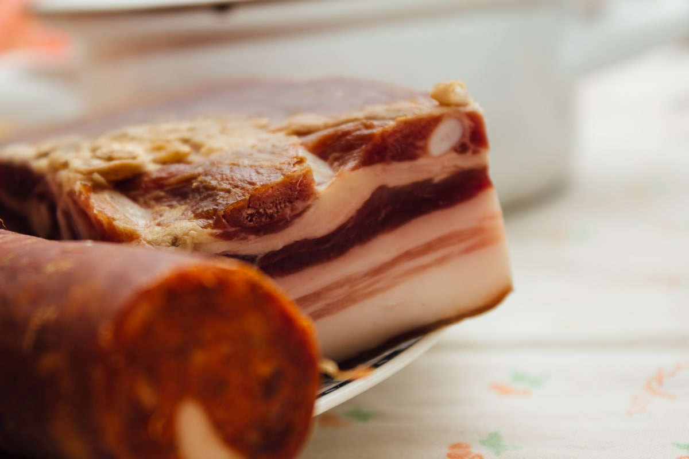

Salo

A simple but delicious recipe
Ingridients
- Pork belly 1kg
- Salt 40g
- Black pepper
- Garlic 200g
Recipe
The most important thing is to choose a good piece of pork belly, The fat shoul have an even pinkish
tint, preferably the presence of meat layers.The skin should be well smoothed,
scrubbed and rinsed.The amount of salt is indicated per 1 kilogram of the product.
- Cut the bacon into 200 gram portions.
- Rub each piece with salt.
- Place pieces of bacon in a container, pressing them on top with a plate
with a load.
- Put away in a cool place for 3-4 days
- After 3 days dry bacon with napkins and rub with a mix of garlic and some black
pepper.
- Put in the freezer for 6 hours.
- Cut into thin slices.Serve with mustard and black bread